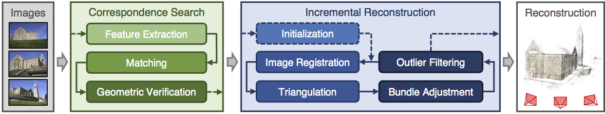

教程
本教程通过演示 COLMAP 中各个独立的处理步骤，介绍基于图像的三维重建主题。如果你对基于图像的三维重建这一主题的更通用、更偏数学的介绍感兴趣，也请参阅 CVPR 2017 Tutorial on Large-scale 3D Modeling from Crowdsourced Data 和 [schoenberger_thesis]。
基于图像的三维重建通常首先利用运动恢复结构（SfM）恢复出场景的稀疏表示以及输入图像的相机位姿。该输出随后作为多视图立体（MVS）的输入，用于恢复场景的稠密表示。
快速入门
首先，按照 此处 的说明启动 COLMAP 的图形用户界面。COLMAP 提供了一个自动重建工具，它只需接收一个输入图像文件夹，就能在工作空间文件夹中生成稀疏重建和稠密重建。在 GUI 中点击 Reconstruction > Automatic Reconstruction，并指定相关选项。输出将写入工作空间文件夹。例如，如果你的图像位于 path/to/project/images，你可以选择 path/to/project 作为工作空间文件夹，运行自动重建工具后，该文件夹的结构会类似于：:
+── images
│ +── image1.jpg
│ +── image2.jpg
│ +── ...
+── sparse
│ +── 0
│ │ +── rigs.bin
│ │ +── cameras.bin
│ │ +── frames.bin
│ │ +── images.bin
│ │ +── points3D.bin
│ +── ...
+── dense
│ +── 0
│ │ +── images
│ │ +── sparse
│ │ +── stereo
│ │ +── fused.ply
│ │ +── meshed-poisson.ply
│ │ +── meshed-delaunay.ply
│ +── ...
+── database.db
这里，path/to/project/sparse 包含所有重建组件的稀疏模型，而 path/to/project/dense 包含与之对应的稠密模型。稠密点云 fused.ply 可以通过 File > Import model from ... 导入到 COLMAP 中，而稠密网格则必须使用诸如 Meshlab 之类的外部查看器来可视化。
如果你需要对重建过程/参数进行更精细的控制，或者你对 COLMAP 背后的底层技术感兴趣，以下章节将给出一般性建议，并更详细地描述重建过程。
运动恢复结构（SfM）

COLMAP 的增量式运动恢复结构（SfM）流程。
运动恢复结构（SfM）是从一系列图像中的投影重建出三维结构的过程。其输入是一组从不同视点拍摄的同一物体的重叠图像。其输出是该物体的三维重建结果，以及所有图像重建出的相机内参和外参。通常，运动恢复结构系统将该过程分为三个阶段：
特征检测与提取
特征匹配与几何验证
结构与运动重建
COLMAP 在不同的模块中体现这些阶段，可根据应用场景进行组合。关于运动恢复结构的一般性介绍以及 COLMAP 中所用算法的更多信息，可在 [schoenberger16sfm] 和 [schoenberger16mvs] 中找到。
如果你能掌控图像采集过程，请遵循以下准则以获得最佳重建效果：
拍摄纹理良好的图像。避免完全没有纹理的图像（例如白墙或空桌面）。如果场景本身纹理不足，你可以放置一些额外的背景物体，例如海报等。
在相似的光照条件下拍摄图像。避免高动态范围的场景（例如逆光带阴影的照片，或透过门/窗拍摄的照片）。避免在光亮表面上出现镜面高光。
拍摄具有高视觉重叠的图像。确保每个物体至少出现在 3 张图像中——图像越多越好。
从不同视点拍摄图像。不要只通过旋转相机在同一位置拍摄，例如每拍一张后都移动几步。同时，也要尽量保证有足够多来自相对相似视点的图像。注意，图像越多并不一定越好，还可能导致重建过程变慢。如果你以视频作为输入，请考虑对帧率进行降采样。
多视图立体（MVS）
多视图立体（MVS）接收 SfM 的输出，为图像中的每个像素计算深度和/或法向信息。随后在三维空间中对多张图像的深度图和法向图进行融合，从而生成场景的稠密点云。利用融合后点云的深度和法向信息，诸如（屏蔽）泊松表面重建 [kazhdan2013] 之类的算法便可恢复出场景的三维表面几何。所得到的网格可以选择性地使用二次误差度量（QEM）抽取 [garland1997] 进行简化，在保留形状和外观的同时降低其复杂度。此外，还可以使用多视图纹理映射 [waechter2014] 对网格进行贴图，该方法将每个面分配给最佳视角的相机图像，并生成带有 UV 坐标的纹理图集。关于多视图立体的一般性介绍以及 COLMAP 中所用算法的更多信息，可在 [schoenberger16mvs] 中找到。
前言
对于普通用户，COLMAP 只需少数几个步骤即可完成标准重建。对于更有经验的用户，程序暴露了许多不同的参数，其中只有一部分对初学者而言是直观的。通常无需修改任何参数程序即可正常工作。这些默认值是在重建鲁棒性/质量与速度之间所做的折中选择。你可以通过选择 Extras > Set
options for ... data 来为不同的重建场景设置“最优”选项。如果你不确定该选择哪些设置，请使用默认值。源代码中包含关于所有参数的更多文档说明。
COLMAP 是研究性软件，在极少数情况下，如果某些约束条件未被满足，它可能会非正常退出。在这种情况下，程序会向 stdout 打印一段回溯信息。为了查看此回溯信息或更多调试信息，建议从命令行运行这些可执行文件（包括 GUI），在命令行中你可以定义各种级别的日志详细程度。
术语
术语 camera（相机）关联的是使用相同变焦倍数和镜头的相机这一物理对象。相机在 COLMAP 中定义了内参投影模型。一台相机可以拍摄多张具有相同分辨率、内参和畸变特性的图像。术语 image（图像）关联的是一个位图文件，例如磁盘上的 JPEG 或 PNG 文件。COLMAP 在每张图像中检测 keypoints（关键点），其外观由数值型 descriptors（描述子）来描述。关键点/描述子之间纯粹基于外观的对应关系由 matches（匹配）定义，而 inlier matches（内点匹配）则是经过几何验证并用于重建流程的匹配。
数据结构
COLMAP 假定所有输入图像都位于一个输入目录中，其中可能包含嵌套的子目录。它会递归地考虑存储在该目录中的所有图像，并通过 OpenImageIO 支持各种不同的图像格式。其他文件会被自动忽略。如果对性能有要求，那么你应将任何非图像文件分离出来。图像通过其相对文件路径被唯一标识。对于后续处理，例如图像去畸变或稠密重建，应保留相对的文件夹结构。COLMAP 不会修改输入图像或目录，所有提取出的数据都存储在单个自包含的 SQLite 数据库文件中（参见 数据库格式）。
第一步是启动 COLMAP 的图形用户界面，方法是运行预编译二进制文件（Windows：COLMAP.bat，Mac：COLMAP.app），或从 CMake 构建文件夹执行 ./src/colmap/exe/colmap gui。接下来，通过选择 File > New project 创建一个新项目。在此对话框中，你必须选择数据库的存储位置以及包含输入图像的文件夹。为方便起见，你可以通过选择 File > Save project 将整个项目设置保存到一个配置文件中。除了任何其他参数设置外，项目配置还会存储数据库和图像文件夹的绝对路径信息。如果你决定移动数据库或图像文件夹，则必须通过创建新项目相应地更改路径。或者，也可以在你选择的文本编辑器中直接修改生成的 .ini 配置文件。要重新打开一个已有项目，你只需通过选择 File > Open project 打开该配置文件，所有参数设置都应被恢复。注意，所有 COLMAP 可执行文件都可以从命令行启动，方法是将各个设置指定为命令行参数，或提供项目配置文件的路径（参见 接口）。
一个示例文件夹结构可能如下所示：:
/path/to/project/...
+── images
│ +── image1.jpg
│ +── image2.jpg
│ +── ...
│ +── imageN.jpg
+── database.db
+── project.ini
在此示例中，你会选择 /path/to/project/images 作为图像文件夹路径，/path/to/project/database.db 作为数据库文件路径，并将项目配置保存到 /path/to/project/project.ini。
特征检测与提取
在第一步中，特征检测/提取在图像中找出稀疏的特征点，并使用数值型描述子来描述它们的外观。COLMAP 在一个步骤中导入图像并执行特征检测/提取，以便只从磁盘加载一次图像。
接下来，选择 Processing > Extract features。在此对话框中，你必须首先确定所采用的内参相机模型。你既可以从内嵌的 EXIF 信息中自动提取焦距信息，也可以手动指定内参，例如通过实验室标定获得的内参。如果某张图像只有部分 EXIF 信息，COLMAP 会尝试在一个大型相机模型数据库中自动查找缺失的相机参数规格。如果你所有的图像都是由同一台物理相机以相同变焦倍数拍摄的，建议在所有图像之间共享内参。注意，如果所有图像共享同一个相机模型，但并非所有图像都具有相同的尺寸或 EXIF 焦距，程序将非正常退出。如果你有若干组共享相同内参的图像，你也可以在之后轻松修改相机模型（参见 数据库管理）。如果你不确定在此步骤中该如何选择，只需使用默认参数即可。
你既可以从图像中检测并提取新特征，也可以从文本文件中导入已有特征。默认情况下，COLMAP 在 GPU 或 CPU 上提取 SIFT [lowe04] 特征。GPU 版本需要连接显示器，而 CPU 版本建议在服务器上使用。一般而言，GPU 版本更优，因为它具有定制的特征检测模式，在高对比度图像的情况下往往能生成质量更高的特征。COLMAP 还支持 ALIKED 特征提取，这是一种使用 ONNX 模型的学习型特征提取器，可通过 --FeatureExtraction.type 选项选择（详见 特征提取与匹配）。如果你导入已有特征，则每张图像旁边都必须有一个文本文件（例如 /path/to/image1.jpg 和 /path/to/image1.jpg.txt），其格式如下：:
NUM_FEATURES 128
X Y SCALE ORIENTATION D_1 D_2 D_3 ... D_128
...
X Y SCALE ORIENTATION D_1 D_2 D_3 ... D_128
其中 X, Y, SCALE, ORIENTATION 为浮点数，D_1...D_128 为 0...255 范围内的值。该文件应有 NUM_FEATURES 行，每个特征占一行。例如，如果一张图像有 4 个特征，那么该文本文件应类似于：:
4 128
1.2 2.3 0.1 0.3 1 2 3 4 ... 21
2.2 3.3 1.1 0.3 3 2 3 2 ... 32
0.2 1.3 1.1 0.3 3 2 3 2 ... 2
1.2 2.3 1.1 0.3 3 2 3 2 ... 3
注意，按照惯例，图像的左上角坐标为 (0,
0)，而最左上角像素的中心坐标为 (0.5, 0.5)。如果你必须为大型图像集合导入特征，使用你喜欢的脚本语言直接访问数据库会高效得多（参见 数据库格式）。
如果你已设置好所有选项，请选择 Extract，然后等待提取完成或将其取消。如果你在提取过程中取消，下次为同一项目开始提取图像时，COLMAP 会自动从上次中断处继续。这也允许你向已有项目/重建中添加图像。在这种情况下，使用共享内参时务必核实相机参数。
所有提取出的数据都会存储在数据库文件中，并可在数据库管理工具中查看/管理（参见 数据库管理），或者，对于专家用户，可使用 SQLite 直接修改（参见 数据库格式）。
特征匹配与几何验证
在第二步中，特征匹配与几何验证找出不同图像中特征点之间的对应关系。
请选择 Processing > Feature matching，并选择所提供的匹配模式之一，这些模式针对不同的输入场景而设计：
穷举匹配（Exhaustive Matching）：如果你数据集中的图像数量相对较少（最多几百张），这种匹配模式应该足够快，并能带来最佳的重建效果。在此模式下，每张图像都会与其他每张图像进行匹配，而块大小（block size）决定了同时从磁盘加载到内存中的图像数量。
顺序匹配（Sequential Matching）：如果图像是按顺序采集的（例如由摄像机拍摄），这种模式会很有用。在这种情况下，连续的帧之间有视觉重叠，无需对所有图像对进行穷举匹配。取而代之的是，连续拍摄的图像会相互匹配。这种匹配模式内置了基于词汇树的回环检测，其中每第 N 张图像（
loop_detection_period）都会与其视觉上最相似的图像（loop_detection_num_images）进行匹配。注意，图像文件名必须按顺序排列（例如image0001.jpg、image0002.jpg等）。数据库中的顺序无关紧要，因为图像会明确按其文件名进行排序。注意，回环检测需要一个预训练的词汇树。系统会自动下载并缓存一个默认的词汇树。还有更多词汇树可供选择，可从 https://demuc.de/colmap/ 下载。如果数据库中相机装置（rig）和帧配置得当，顺序匹配会自动将连续帧中的所有图像相互匹配。词汇树匹配（Vocabulary Tree Matching）：在这种匹配模式 [schoenberger16vote] 中，每张图像都使用带有空间重排序的词汇树与其视觉上的最近邻进行匹配。对于大型图像集合（数千张），这是推荐的匹配模式。它需要一个预训练的词汇树，可从 https://demuc.de/colmap/ 下载。
空间匹配（Spatial Matching）：这种匹配模式将每张图像与其空间上的最近邻进行匹配。空间位置可以在数据库管理中手动设置。默认情况下，COLMAP 还会从 EXIF 中提取 GPS 信息，并将其用于空间最近邻搜索。如果有准确的先验位置信息可用，这是推荐的匹配模式。
传递匹配（Transitive Matching）：这种匹配模式利用已有特征匹配的传递关系来生成更完整的匹配图。如果图像 A 与图像 B 匹配，且 B 与 C 匹配，那么此匹配器会尝试直接匹配 A 与 C。
自定义匹配（Custom Matching）：这种模式允许指定单独的图像对进行匹配，或导入单独的特征匹配。要指定图像对，你必须提供一个文本文件，每行一个图像对：:
image1.jpg image2.jpg image1.jpg image3.jpg ...
其中
image1.jpg是图像文件夹中的相对路径。你有两种导入单独特征匹配的方式：要么是未经几何验证的原始特征匹配，要么是已经过几何验证的特征匹配。两种情况下，所期望的格式都是：:image1.jpg image2.jpg 0 1 1 2 3 4 <empty-line> image1.jpg image3.jpg 0 1 1 2 3 4 4 5 <empty-line> ...
其中
image1.jpg是图像文件夹中的相对路径，成对的数字是各自图像中以零为基准的特征索引。如果你必须为大型图像集合导入大量匹配，使用你选择的脚本语言直接访问数据库会更高效。
如果你已设置好所有选项，请选择 Match，然后等待匹配完成或在中途取消。注意，此步骤可能耗费大量时间，具体取决于图像数量、每张图像的特征数量以及所选的匹配模式。穷举匹配的预期耗时：几十张图像需要几分钟，几百张图像需要几小时，而数千张图像则需要数天或数周。如果你取消匹配过程，或在匹配后导入新图像，COLMAP 只会匹配此前尚未匹配过的图像对。跳过已匹配图像对的开销很低。这也使得可以匹配在初次匹配之后导入的额外图像，并使得可以为同一数据集组合不同的匹配模式。
所有提取出的数据都会存储在数据库文件中，并可在数据库管理工具中查看/管理（参见 数据库管理），或者，对于专家用户，可使用 SQLite 直接修改（参见 数据库格式）。
注意，SIFT 特征匹配可以使用 GPU 进行加速，在匹配过程中你计算机的显示性能可能会显著下降。如果你的系统有多个支持 CUDA 的 GPU，你可以通过 gpu_index 选项选择特定的 GPU。也可以通过设置 --FeatureMatching.use_gpu 0 在 CPU 上执行特征匹配，不过对于大型数据集这会显著变慢。
稀疏重建
在前面两个步骤生成场景图之后，你可以通过选择 Reconstruction > Start 开始增量式重建过程。COLMAP 首先将所有提取出的数据从数据库加载到内存中，并从一个初始图像对作为种子开始重建。然后，通过配准新图像和三角化新的点，对场景进行增量式扩展。在此重建过程中，结果会以“实时”方式可视化。关于可用控件的更多细节，请参阅 图形用户界面 一节。如果并非所有图像都被配准到同一个模型中，COLMAP 会尝试重建多个模型。可以从工具栏的下拉菜单中选择不同的模型。如果不同的模型有共同的已配准图像，你可以使用 model_merger 可执行文件将它们合并为单个重建（详见 FAQ）。
理想情况下，重建运行良好且所有图像都被配准。如果情况并非如此，建议：
执行额外的匹配。为获得最佳效果，可使用穷举匹配、启用引导匹配（guided matching）、增加词汇树匹配中的最近邻数量，或增加顺序匹配中的重叠等。
如果 COLMAP 初始化失败，手动选择一个初始图像对。选择
Reconstruction > Reconstruction options > Init，并从数据库管理工具中设置那些具有足够多来自不同视点匹配的图像。
导入与导出
COLMAP 提供了多种导出选项以供进一步处理。为获得完全的灵活性，建议通过选择 File > Export 以 COLMAP 的数据格式导出当前查看的模型，或通过 File > Export all 导出所有重建出的模型。模型会被导出到所选文件夹中，分别使用单独的文本文件来存储重建出的相机、图像和点。当以 COLMAP 的数据格式导出时，你可以重新导入该重建，以便后续可视化、图像去畸变，或从上次中断处继续一个已有的重建（例如，在导入并匹配新图像之后）。要导入一个模型，请选择 File > Import 并选择导出文件夹路径。或者，你也可以通过选择 File > Export as... 将模型导出为多种其他格式，例如 Bundler、VisualSfM [1]、PLY 或 VRML。COLMAP 可以通过选择 File > Import From... 可视化带有 RGB 信息的纯 PLY 点云文件。关于导出模型格式的更多信息，可在 此处 找到。
稠密重建
在重建出场景的稀疏表示以及输入图像的相机位姿之后，MVS 现在可以恢复出更稠密的场景几何。COLMAP 拥有一个集成的稠密重建流程，用于为所有已配准的图像生成深度图和法向图，将深度图和法向图融合成带有法向信息的稠密点云，并最终使用泊松 [kazhdan2013] 或 Delaunay 重建从融合后的点云估计出稠密表面。可选地，所得到的网格可使用 mesh_simplifier 命令进行简化，在保留整体形状的同时减少面的数量。还可以使用 mesh_texturer 命令对网格进行贴图，该命令从去畸变后的图像生成纹理图集和每个面的 UV 坐标。
要开始操作，请将你的稀疏三维模型导入到 COLMAP 中（或在完成前面的稀疏重建步骤后选择重建出的模型）。然后，选择 Reconstruction > Multi-view stereo 并选择一个空的或已有的工作空间文件夹，该文件夹用于存放输出以及所有稠密重建结果。第一步是对图像进行 undistort（去畸变），第二步是使用 stereo 计算深度图和法向图，第三步是将深度图和法向图 fuse（融合）成点云，最后再进行一个可选的点云 meshing（网格化）步骤。在立体重建过程中，由于计算负载沉重，显示可能会冻结；如果你的 GPU 显存不足，重建过程可能会非正常崩溃。关于如何避免这些问题的信息，请参阅 FAQ（冻结 和 内存）。注意，点云重建出的法向无法在 COLMAP 中直接可视化，但可以在例如 Meshlab 中通过启用 Render > Show Normal/Curvature 来可视化。类似地，重建出的稠密表面网格模型也必须使用外部软件来可视化。
除了内部的稠密重建功能外，COLMAP 还可导出到其他几个稠密重建库，例如 CMVS/PMVS [furukawa10] 或 CMP-MVS [jancosek11]。请选择 Extras > Undistort images 并选择合适的格式。输出文件夹中包含重建结果和去畸变后的图像。此外，这些文件夹中还包含用于执行稠密重建的示例 shell 脚本。要运行 PMVS2，请执行以下命令：
./path/to/pmvs2 /path/to/undistortion/folder/pmvs/ option-all
其中 /path/to/undistortion/folder 是在去畸变对话框中选择的文件夹。在上述命令行参数中，务必不要忘记 /path/to/undistortion/folder/pmvs/ 末尾的斜杠。
对于大型数据集，你可能想先运行 CMVS 将场景聚类成更易于处理的部分，然后再运行 COLMAP 或 PMVS2。关于如何将 CMVS 与 COLMAP 或 PMVS2 结合运行，请参阅去畸变输出文件夹中的示例 shell 脚本。此外，还有许多支持 COLMAP 输出的外部库：
数据库管理
你可以在数据库管理工具中查看和管理导入的相机、图像和特征匹配。选择 Processing > Manage database。在打开的对话框中，你可以看到导入的图像和相机列表。你可以通过点击 Show image 和 Overlapping images 查看每张图像的特征和匹配。数据库表中的单个条目可通过双击特定单元格进行修改。注意，对数据库的任何更改都只有在点击 Save 之后才会生效。
要在任意图像组之间共享相机内参，选择单张或多张图像，选择 Set camera 并设置 camera_id，它对应于相机表中唯一的 camera_id 列。你还可以添加具有特定参数的新相机。通过将 prior_focal_length 标志设置为 0 或 1，你可以提示重建算法是否应信任该焦距值。如果有先验的实验室标定，你应将此值设为 1。在没有关于焦距的先验知识时，建议将此值设为 1.25 *
max(width_in_px, height_in_px)。
数据库管理工具的功能有限，要对数据进行完全控制，你必须直接修改 SQLite 数据库（参见 数据库格式）。通过直接访问数据库，你可以只将 COLMAP 用于特征提取和匹配，或者可以导入你自己的特征和匹配，从而仅使用 COLMAP 的增量式重建算法。
图形界面与命令行界面
COLMAP 的大多数功能既可从图形界面也可从命令行界面访问，二者都嵌入在同一个可执行文件中。你可以直接将选项作为命令行参数提供，也可以使用 --project_path path/to/project.ini 参数提供一个包含这些选项的 .ini 项目配置文件。要启动 GUI 应用程序，请执行 colmap gui，或直接以 colmap gui --project_path path/to/project.ini 的形式指定项目配置，以避免在 GUI 中繁琐地选择。要列出命令行可用的各种命令，请执行 colmap help。例如，要从命令行运行特征提取，你必须执行 colmap feature_extractor。图形用户界面 和 命令行界面 章节提供了关于可用命令的更多细节。
Footnotes